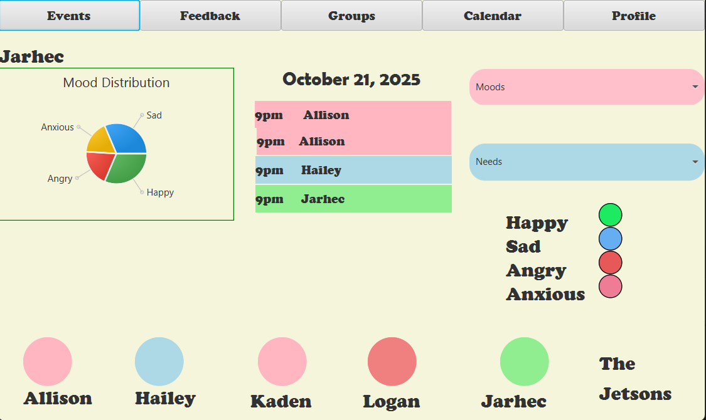

Projects
Thought Bubble - Repository
Authors: Jarhec Arreola, Allison Barricklow, Logan Bales, Hailey Hudson, and Kaden Martinez
Jan. 2025 - May 2025

ThoughtBubble aims to turn screen time into family time! Families these days are not as close as they used to be, whether by distance or by difference in communication styles. Everyone is on a device but it is not being used to further develop family dynamics. ThoughtBubble will allow families to display how they are feeling and set a status (i.e. how open they are to talk) in an effort to bring them closer together using technology.
Many families are separated, for jobs, military service, or school, so being able to communicate where their head is at can be difficult. ThoughtBubble is not limited to strictly families, but can also be used among friends or close-knit groups as well. Have you ever needed to remember birthdays, important events, or celebrations coming up in the lives of your loved ones without having to ask or possibly having to shamefully admit that you forgot? ThoughtBubble will allow you to keep track of all of these important life events along with the emotional needs of those you love in one simple place.
The primary end user for our family communication planner is an average family with basic modern skills when it comes to using technology. With families using the tool, there will be members of various ages that may have a lower or higher grasp of these skills, in which the tool will need to accommodate for in its ease of use. There also may be members of a family who are either too young or old to use technology effectively, where we will need basic functionality for users in this case. Families can also change, in which the tool will need to adapt to these changes, which can create an overall tailored experience for "families" that may not be all blood-related.
Voice Reminder - Repository
Authors: Hailey Hudson and Genesis Valenzo
Sept. 2025 - Dec. 2025
This is a project for my Human-Centered Computing Course. We are aiming to create an Android Phone App that allows users to create, delete, and edit reminders/tasks with either a typed message or a voice recording. We would like the interface to be intuitive and learnable for a user with proper signifiers and affordances.